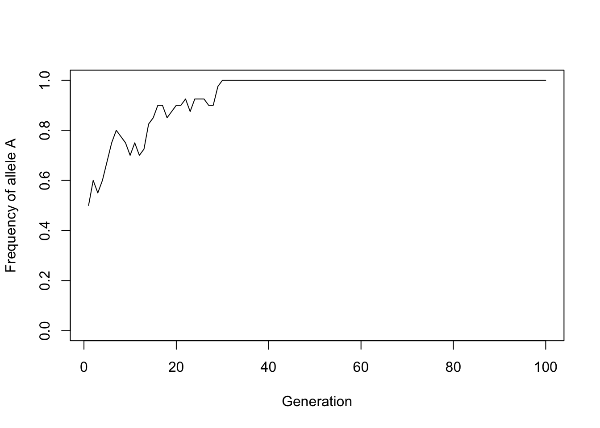
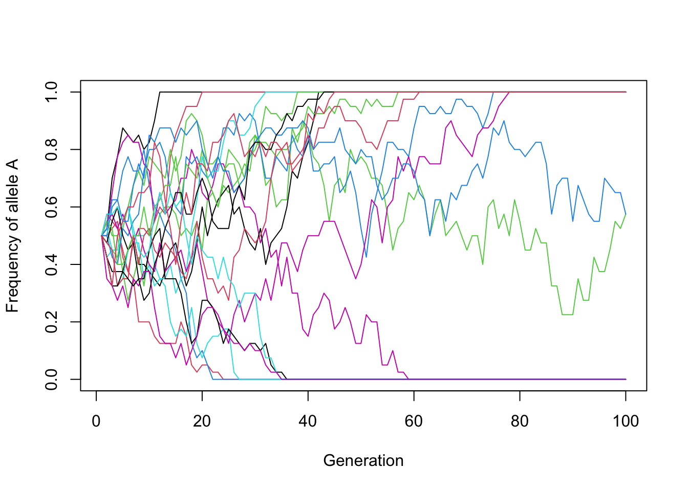
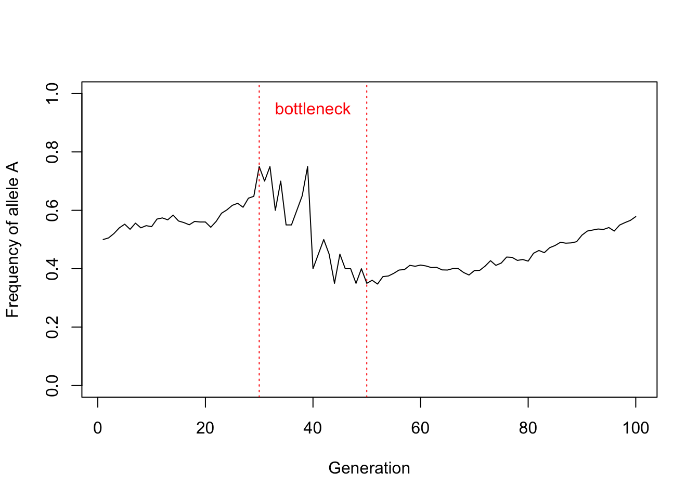
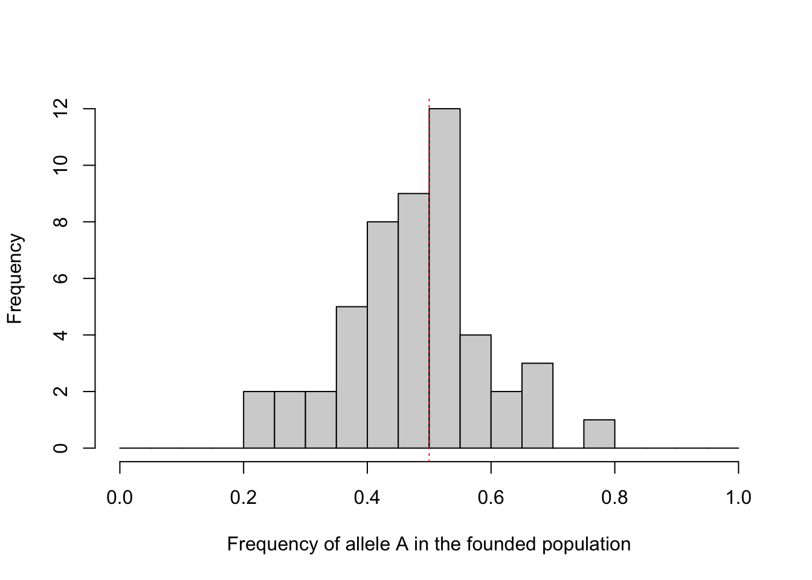

17 The Gene Pool Model
17.1 Background
A central goal in evolutionary biology is to understand variation – including genetic variation – and how it changes through time. One important idea is the “gene pool,” which contains all the different versions of genes (alleles) within a group of organisms. These alleles influence phenotypic traits and other characteristics. To grasp how populations evolve, we need to understand how allele frequencies change in a population. Over time, genetic diversity changes as the relative numbers of alleles change. Some alleles may be lost from the population while others may become “fixed” – where the allele is the only one left, so every individual in the population carries it.
When no other process is acting, allele frequencies still change by chance. This is genetic drift. The main factor that determines the strength of drift is population size. In small populations, “sampling error” means that, just by chance, large changes often occur in allele frequencies. In large populations, dramatic changes are much less likely.
Two related concepts are critical in understanding genetic drift: bottlenecks and founder effects. A genetic bottleneck occurs when a population is dramatically reduced in size, for example by an environmental catastrophe. During a bottleneck, allele frequencies (and genetic diversity) can change dramatically because of sampling effects. A founder effect is a similar scenario, where a small group (a sample from the population) establishes a new population. Because the new population starts from a small sample of the ancestral population, it can have a rather different genetic composition from the ancestral population.
Learning outcomes:
- Greater understanding of evolution via genetic drift (neutral evolution).
- Understanding of genetic bottlenecks and founder effects.
- Understanding the relationship between stochasticity and genetic variation.
- Use of R for exploring biological phenomena.
17.2 Your task
In this practical, you will use R to simulate how allele frequencies change in a population over generations. By changing population size, starting frequency and the history of the population, you will see how drift behaves in different situations.
The practical has four parts:
- The gene pool. Build a gene pool and see that the gene pool in the next generation is a sample of the current one.
- Drift through time. Project allele frequency through time and investigate the importance of population size.
- Many populations. Repeat the simulation many times to estimate the probability that an allele is fixed or lost, including for a rare (new) allele.
- Bottlenecks and founder effects. Modify the code to simulate a population that passes through a period of small size, and a new population founded by a few individuals.
Before you start, make a prediction. Imagine two populations, each starting with allele A at a frequency of 0.5. One has 20 individuals and the other has 1000. Sketch what you expect the frequency of A to look like over 100 generations in each population. Which population do you expect to lose one of its alleles first? Keep your sketch, and compare it with your simulations in Part 2.
17.2.1 The model and its assumptions
Our model is a simple version of the Wright-Fisher model of population genetics. It assumes:
- a single locus with two alleles, A and a;
- a constant number of diploid individuals, N, so the gene pool contains 2N alleles;
- non-overlapping generations: all adults are replaced by their offspring each generation;
- random mating, so each new allele is a random draw from the parents’ gene pool;
- no selection, no mutation and no migration.
So the only thing that changes allele frequencies is chance. Keep these assumptions in mind: we come back to them at the end.
17.3 Part 1: A simple model
We will first aim to get an understanding of what a gene pool is, using a simple model. We will use R to make a gene pool, then look at how allele frequency in the gene pool changes over a single generation.
17.3.1 The gene pool
To establish the gene pool we first set the population size. I set this to be reasonably large, at 500 individuals.
There are two alleles (gene variants) per individual: one allele came from the father, and one from the mother.
Therefore, the gene pool contains 2 x N alleles (in this case, 1000 alleles).
I now set the initial allele frequency to be 0.5. You can use other values, but 0.5 is best to start with.
We can now calculate the number of A and a alleles, by multiplying the frequency by the pool size and rounding the result to the closest whole number.
number_A <- round(initial_frequency_A * pool_size)
number_a <- round(initial_frequency_a * pool_size)Following this, the gene pool can be filled like this.
What we are saying here is “repeat A, number_A times, then repeat a number_a times”.
Output (counts in the initial gene pool):
## gene_pool
## a A
## 500 500We can express these numbers as allele frequencies (i.e. as proportions of the total) by wrapping the table command with prop.table like this:
## gene_pool
## a A
## 0.5 0.517.3.2 Projecting allele frequency over one time step
Let’s assume the population size remains constant at N = 500.
During the next time step (i.e. 1 generation), the individuals in the population mate with each other randomly. We can use the sample function to simulate this.
This code is saying “sample, from the gene pool, 1000 alleles, with replacement”. We need to sample \(2 \times\) the population size because each individual contains two alleles. We sample with replacement because any allele in the parents’ gene pool can be passed on to more than one offspring (or to none).
Let’s look at the allele frequency in the new gene pool. It should be similar, but probably not exactly the same as the initial gene pool.
## new_gene_pool
## a A
## 0.491 0.509There are still 500 individuals, but the allele frequencies are (probably) not exactly the same as in the initial gene pool. The reason is that the new gene pool is a random sample, not simply a carbon copy.
Try to vary the population size and do this several times at small and large population sizes. You should notice that the frequencies are more similar to the starting frequency, and to each other, when you repeat this for large population sizes than for small population sizes.
17.4 Part 2: Simulation of allele frequency through time
To simulate the passage of time, we need to do this sampling procedure many times.
We can do this using a loop in R. In our loop, we repeat the gene pool sampling process once per generation. Each time we go through the loop, we sample alleles from the old gene pool at time \(t\) to create a new gene pool for time \(t+1\). Each time through the loop we also calculate the allele frequency of A, so we can track how it changes through time.
Let’s set up a simulation that runs for 100 generations, starting with a small population of 20 individuals. You can copy and paste this code, which is a complete gene pool model.
# Set the population size and number of generations
pop_size <- 20
n_gen <- 100
# Set up an empty vector of length n_gen to contain results
allele_freq_A <- rep(NA, n_gen)
# Put in an initial value for frequency of A
allele_freq_A[1] <- 0.5
# Establish the initial gene pool and name it gene_pool_time_n
# This part looks complicated, but it just condenses the code
# from Part 1 into one line.
gene_pool_time_n <- c(
rep("A", round(2 * allele_freq_A[1] * pop_size)),
rep("a", round(2 * (1 - allele_freq_A[1]) * pop_size))
)
for (i in 2:n_gen) {
# Sample 2N alleles, with replacement, to make the next generation
gene_pool_time_n_plus_1 <- sample(gene_pool_time_n,
pop_size * 2,
replace = TRUE
)
# Calculate the frequency of A in the new gene pool
gene_pool_table <- table(factor(gene_pool_time_n_plus_1,
levels = c("A", "a")))
allele_freq_A[i] <- gene_pool_table["A"] / sum(gene_pool_table)
# Replace the old gene pool with the new one.
gene_pool_time_n <- gene_pool_time_n_plus_1
}Now we can plot this result (Figure 17.1).
plot(1:n_gen, allele_freq_A, type = "l",
xlab = "Generation",
ylab = "Frequency of allele A",
ylim = c(0, 1))
Figure 17.1: Simulation of allele frequency through time in a population of 20 individuals
Tip: make a new script and paste the code loop along with the plot command so that you can run both together easily.
Run the code several times with pop_size <- 20, then several times with pop_size <- 1000. Compare the results with the prediction you made at the start.
- How does population size affect the variation through time in allele frequencies? Why do you see these patterns?
- With 20 individuals, does A always end up fixed (frequency 1), or is it sometimes lost (frequency 0)?
- When the population size is large (say 1000), can you see an allele become fixed within 100 generations? Do you think it could happen if you ran the simulation for much longer? (Try
n_gen <- 3000. It may take a little while to run.)
17.5 Part 3: Many populations
A single run of the simulation is like watching a single population. To answer questions about probability (for example, “how likely is it that A is fixed?”) we need to watch many populations: we run the same simulation many times and count the outcomes.
To make this easy, we first wrap the loop from Part 2 into a function. A function is a reusable piece of code: you give it some inputs (here, population size, number of generations and the starting frequency of A), and it returns the frequency of A in every generation.
simulate_gene_pool <- function(pop_size, n_gen, initial_freq_A) {
allele_freq_A <- rep(NA, n_gen)
allele_freq_A[1] <- initial_freq_A
gene_pool_time_n <- c(
rep("A", round(2 * initial_freq_A * pop_size)),
rep("a", round(2 * (1 - initial_freq_A) * pop_size))
)
for (i in 2:n_gen) {
gene_pool_time_n_plus_1 <- sample(gene_pool_time_n,
pop_size * 2,
replace = TRUE
)
gene_pool_table <- table(factor(gene_pool_time_n_plus_1,
levels = c("A", "a")))
allele_freq_A[i] <- gene_pool_table["A"] / sum(gene_pool_table)
gene_pool_time_n <- gene_pool_time_n_plus_1
}
return(allele_freq_A)
}Now we can use replicate to run the function many times. Here we simulate 20 populations, each of 20 individuals, for 100 generations. The result is a matrix with one row per generation and one column per population. The matplot function plots each column as a separate line (Figure 17.2).
n_gen <- 100
results <- replicate(20, simulate_gene_pool(pop_size = 20, n_gen = n_gen,
initial_freq_A = 0.5))
matplot(1:n_gen, results, type = "l", lty = 1,
xlab = "Generation",
ylab = "Frequency of allele A",
ylim = c(0, 1))
Figure 17.2: Twenty replicate populations of 20 individuals, each starting with allele A at a frequency of 0.5
We can count the outcomes by looking at the last row of the matrix (the final generation):
## [1] 11## [1] 7Use this code to investigate the following questions:
- What proportion of the populations have lost one of their alleles (i.e. A is fixed or lost) by generation 100 when N = 20? When N = 100? When N = 1000?
- Of the populations where one allele was fixed, in what proportion was it A? Does this proportion depend on population size? (You may need more than 20 replicates to see this clearly.)
- So what does population size change: which allele is fixed, or how quickly variation is lost?
17.5.1 Rare alleles and new mutations
A brand-new mutation starts as a single copy in the gene pool, so its starting frequency is \(1/(2N)\). Let’s see what happens to it. Here we run 200 populations of 20 individuals, each starting with one copy of A (frequency \(1/40\)), for 300 generations (long enough for nearly all of them to be fixed or lost).
pop_size <- 20
results_rare <- replicate(200, simulate_gene_pool(pop_size = pop_size, n_gen = 300,
initial_freq_A = 1 / (2 * pop_size)))
final_freq_rare <- results_rare[300, ]
mean(final_freq_rare == 1) # proportion of populations where A was fixed## [1] 0.015## [1] 0.985- Are rare alleles more or less likely to be lost than common ones?
- Compare the proportion of populations where the new allele was fixed with \(1/(2N)\). What does this tell you about the fate of most new mutations?
- Try a few different starting frequencies (e.g. 0.1, 0.25, 0.75). Can you find a simple rule linking the starting frequency of a neutral allele to its probability of fixation?
Going further: tracking genetic diversity. In the lecture we measured genetic diversity with expected heterozygosity, \(H_e = 2pq\). Calculate \(H_e\) for each generation of each population (2 * results * (1 - results)), and plot its average across populations (rowMeans). Theory predicts that drift reduces \(H_e\) by a factor of \(1 - 1/(2N)\) every generation, so that \(H_t = H_0 (1 - 1/(2N))^t\). Add this curve to your plot with lines(). Does your simulation agree with the theory?
17.6 Part 4: Bottlenecks and founder effects
Next, modify the code to simulate a genetic bottleneck, when a population goes through a period of small population size. Add this code at the start of the loop (inside the curly brackets), so that the population size is reset each generation:
This code means, “…if the generation is between 30 and 50, make the population size 10, otherwise make the population size 1000”. In other words, the population goes through a bottleneck of 10 individuals for about 20 generations. You can modify this code to change the length and severity of the bottleneck.
Figure 17.3 shows an example of what your plot of a bottleneck simulation might look like. I have added some lines to show where the bottleneck starts and ends. Here is the complete code:
# Set the starting population size and number of generations
pop_size <- 1000
n_gen <- 100
# Set up an empty vector of length n_gen to contain results
allele_freq_A <- rep(NA, n_gen)
# Put in an initial value for frequency of A
allele_freq_A[1] <- 0.5
# Establish the initial gene pool and name it gene_pool_time_n
gene_pool_time_n <- c(
rep("A", round(2 * allele_freq_A[1] * pop_size)),
rep("a", round(2 * (1 - allele_freq_A[1]) * pop_size))
)
for (i in 2:n_gen) {
# Set the population size for this generation
if (i %in% 30:50) {
pop_size <- 10
} else {
pop_size <- 1000
}
gene_pool_time_n_plus_1 <- sample(gene_pool_time_n,
pop_size * 2,
replace = TRUE
)
gene_pool_table <- table(factor(gene_pool_time_n_plus_1,
levels = c("A", "a")))
allele_freq_A[i] <- gene_pool_table["A"] / sum(gene_pool_table)
# Replace the old gene pool with the new one.
gene_pool_time_n <- gene_pool_time_n_plus_1
}
plot(1:n_gen, allele_freq_A, type = "l",
xlab = "Generation",
ylab = "Frequency of allele A",
ylim = c(0, 1))
abline(v = 30, col = "red", lty = 3)
abline(v = 50, col = "red", lty = 3)
text(40, 0.95, "bottleneck", col = "red")
Figure 17.3: Simulation of a genetic bottleneck: 1000 individuals, falling to 10 individuals in generations 30 to 50
Run the bottleneck simulation several times, and answer the following questions:
- How does a genetic bottleneck influence the genetic composition of the population?
- How might a genetic bottleneck affect the probability that one allele is fixed and the other lost?
- What happens to allele frequency after the bottleneck, when the population is large again? Does the population “recover” its original allele frequency?
- Does the severity of the bottleneck (i.e. its length and the population size during it) matter?
17.6.1 Founder effects
A founder effect is like a bottleneck at the very start of a new population. To simulate it, take a large source population (1000 individuals, frequency of A = 0.5) and found a new population from just 10 individuals (20 alleles) drawn at random from it. Repeat this 50 times, as if 50 islands were each colonised by a different group of 10 founders:
source_pool <- c(rep("A", 1000), rep("a", 1000))
founder_freq_A <- replicate(50, {
founders <- sample(source_pool, 2 * 10, replace = FALSE)
mean(founders == "A")
})
hist(founder_freq_A, breaks = seq(0, 1, by = 0.05),
xlab = "Frequency of allele A in the founded population",
main = "")
abline(v = 0.5, col = "red", lty = 3)
Figure 17.4: Frequency of allele A in 50 new populations, each founded by 10 individuals from a source population where the frequency of A is 0.5
- How different are the new populations from the source population, and from each other?
- How would this change with 50 founders instead of 10?
- Optional: use
simulate_gene_pool()withinitial_freq_Aset to one of these founder frequencies to follow a founded population forward in time.
17.7 Conclusions
You should now have a good idea of what a gene pool model is, the importance of population size, the concept of sampling from a population, and how bottlenecks and founder effects change genetic composition.
Let’s finish with some more general questions:
- What are the limitations of this simulation? Look back at the list of assumptions in “The model and its assumptions”. Which real-world processes and complexities are missing?
- Why is genetic diversity important to a population, for example in a conservation context?
- Can you think of real-life scenarios where understanding gene pool dynamics would be valuable, such as in conservation biology or medical genetics?
17.8 Takeaways
- Genetic drift is stronger in small populations because sampling error is larger.
- Drift does not favour either allele: a neutral allele’s probability of fixation equals its starting frequency. Population size changes how quickly variation is lost.
- Most new mutations (starting at \(1/(2N)\)) are lost by chance.
- Bottlenecks and founder effects can rapidly reshape allele frequencies, and the change persists after the population becomes large again.
Challenge: Can you think of a way to simulate the genetics of a population that is steadily shrinking through time? Try it.